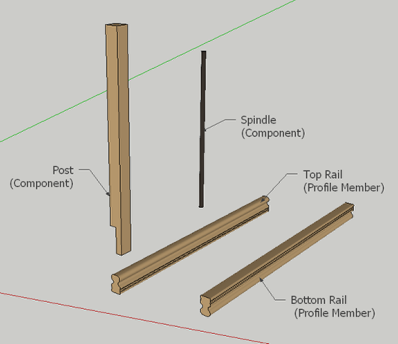
Draw a series of Profile Members and other Components that you wish to use for the assembly. In this example, we will make a railing composed of rails, posts and spindles.
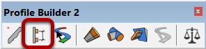
Click the 'New Assembly' button to create a new Assembly
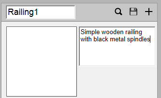
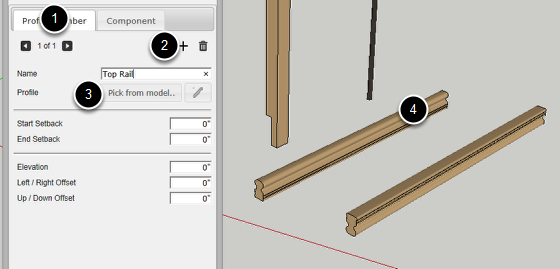
1. Click the Profile Member Tab.
2. Click the 'Add Profile Member' button.
3. Click the 'Pick from Model' button.
4. Click a Profile Member in your model to add it to the assembly.
Be sure to give the part a meaningful name.
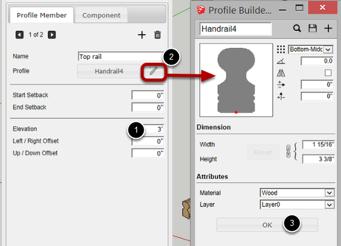
1. Set the Elevation to 3 feet.
2. Edit the Profile Attributes if required.
3. Click 'OK' when finished editing
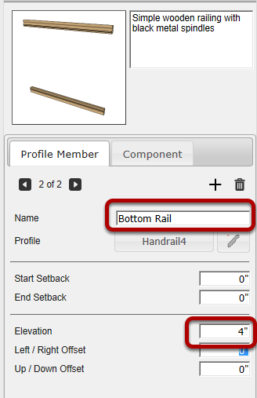
Repeat the previous steps to add the Bottom Rail.
Set the elevation of the bottom rail at 4"
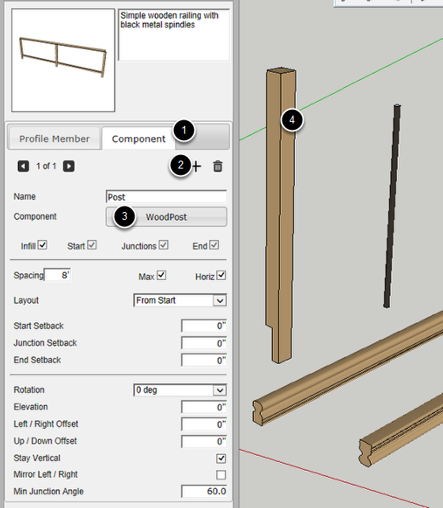
1. Click on the 'Component' tab.
2. Click the 'Add Component' button.
3. Click the 'Pick from Model' button.
4. Click on a component in your model.
Be sure to give the component part a meaningful name.
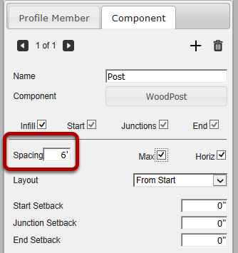
Change the spacing to 6'. Leave the other settings as is.
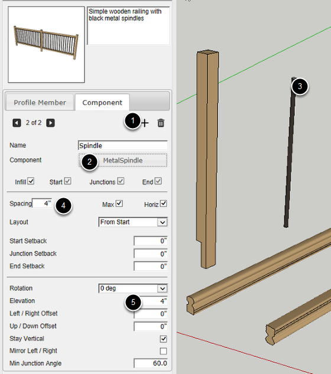
1. Click the 'Add Component' button.
2. Click the 'Pick from Model...' button.
3. Click the Metal Spindle Component.
4. Change the spacing to 4 inches.
5. Change the elevation to 4 inches.
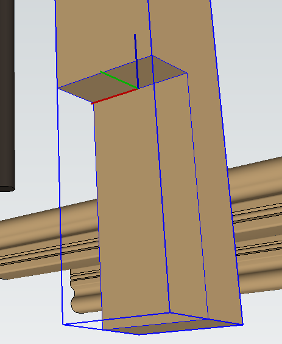
It will usually be necessary to edit the axis of the Component so that it is positioned correctly. To edit the axis of a component, right-click on the component in the SketchUp model and choose 'Change Axes' from the context menu.
The component will be positioned on the Assembly path as follows:
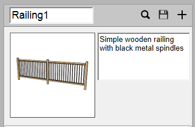
Now that you have created an assembly, you can save it, build it, or share it on the 3D Warehouse!